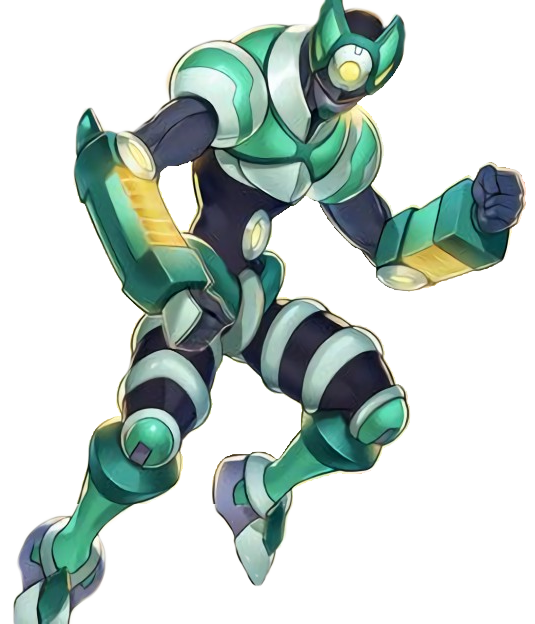
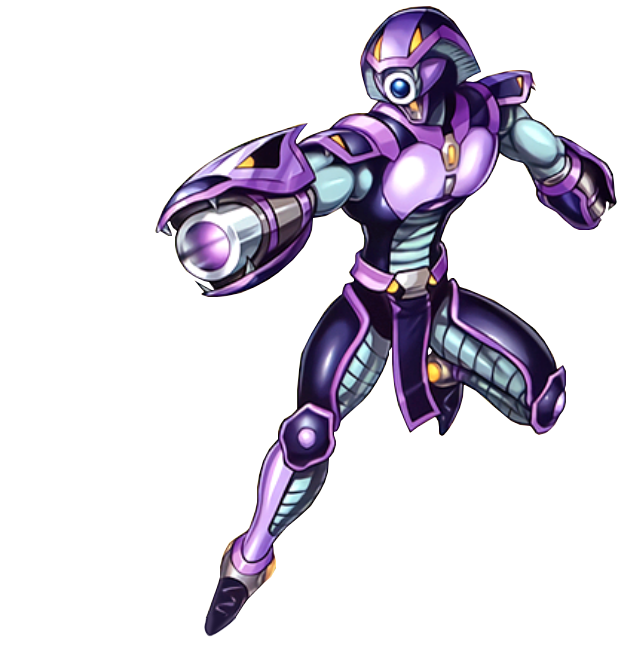
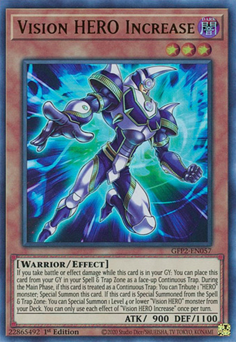
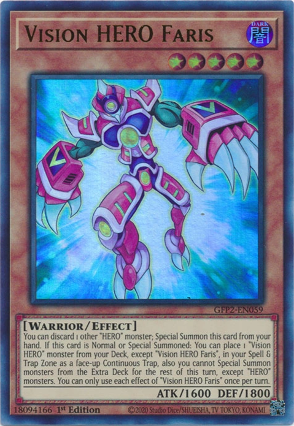
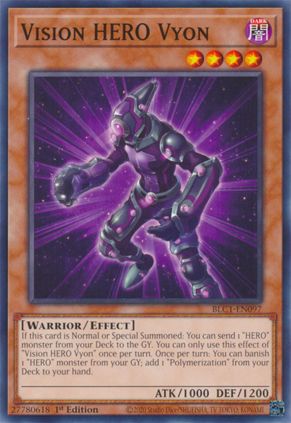
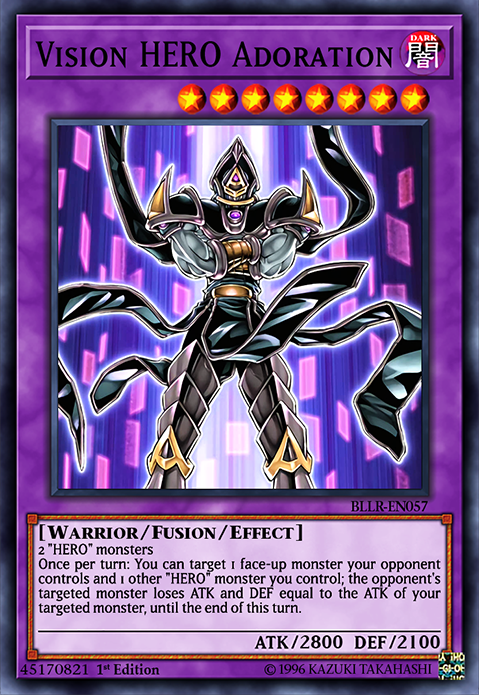
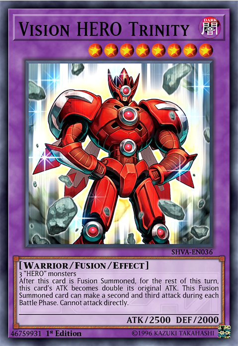

Heroes diferentes en el campo
Los HÉROE Visión forman un sub-arquetipo que pertenecen al arquetipo "HÉROE", usado por Aster Phoenix en el manga Yu-Gi-Oh! GX. La mayoría de ellos llevan un casco y poseen un aspecto robótico. Cuando un jugador que controla un "HÉROE Visión" recibe daño, puede Colocarlo en su Zona de Magia y Trampas. Los HÉROE Visión pueden ser Sacrificados para Invocar de Modo Especial un HÉROE Visión de la zona de Cartas de Magia y Trampa del controlador.
Fusiones de Visión

